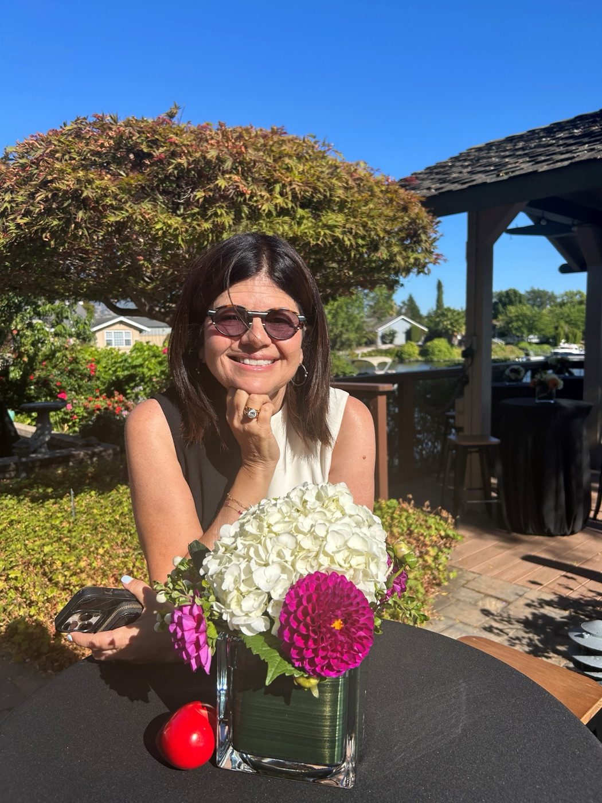

Stacy
Host & chef · Networking queen
A retired Deloitte Principal after 37 years in financial services and consulting, Stacy is passionate about trying new recipes, healthy cooking, building long-lasting relationships, and sharing. She loves making every kind of bread and cooking dishes from around the world.
- Credentials
- Plant-Forward certified, Culinary Institute of America · Member, Teaching Kitchen Collaborative · Board member
- Superpower
- Networking, sharing, and getting things done
- Fun fact
- She has a twin brother who is a full foot taller than she is.
“How choices in cooking align to create long-lasting personal and professional relationships.”